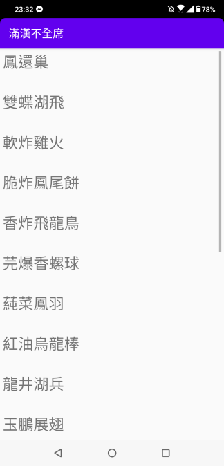

本文為 Udacity Developing Android Apps Lesson 1 的課程筆記。
在開始正文之前，想先說說最近寫文章的狀況。
在考慮參加六角學院的鐵人賽的時候，我就想過自己並不擅長將文章拆分成適合閱讀的片段；但是因為想督促自己學習 Android ，所以仍然決定參考 IT 邦的方式寫 Android 的文章，而原本看六角學院課程的超長筆記文就繼續照原本的方式更新（不算在鐵人賽的文章裡）。
但其實才一兩週就覺得滿辛苦的，因為看六角課程的文章不算在鐵人賽中，常常有明明看了不少東西、文章卻一點都擠不出來的感覺。
所以一直寫寫停停，甚至連原本寫筆記的步調都亂掉了。
以前讀過心理學的「遊戲工作化」這個概念。
大略是說，原本因為興趣而持續在做的事情，被獎勵以後反而會失去興致。
大概就是我最近的心得吧（不過有部份的原因是我完美主義，所以難度太高）。
寫 Code 和寫文章都要有砍掉重練的勇氣；我決定不管之前寫的 Android 短文，重新以 Udacity 上的課程為基準，單純記錄看課程的筆記。
跟之前六角整個課程寫一篇的方式不同的是改以章節拆分，至於六角的筆記要不要重新拆成比較短的文章，就再說了。
以下才是筆記正文。
關於 Udacity
Udacity 有很多不同類型的課程，有免費也有付費，方便的是網站有中國版本，所以可以看簡體中文。
雖然有些翻譯不是很符合台灣的風格，有時看不出來原文是什麼，但方便快速理解。
另外美國跟中國網站的介面跟課程切分不太相同，切換上會有點迷路，這是比較麻煩的地方。
Udacity 除了 Developing Android Apps 以外，也有更進階與更基礎的 Android 課程。
基礎課程用很多非常初階的比喻，讓完全沒有程式基礎的人了解一些基本概念。
關於這堂課
Developing Android Apps 這堂課適合有程式基礎、但是不了解 Android 的人。
開發環境建議使用 Android Studio 。
先修條件
- 使用 Java 至少一年
- 熟悉 networking 及 threading
- 用過版本控制
- 對 XML 有基本了解
以上雖然我只勾第三點，但其實沒有這些條件也還好。
真的很在意的話， Udacity 有相關的課程。
教材
這門課有兩套教材，都放在 GitHub 上（請自行去 Udacity 的課程裡看）；每個小節都有題目跟答案。
題目中可以看 TODO 的部分，會提示步驟。
想要查詢所有的 TODO ，可以點開 Android Studio 的左下角的 TODO ；如果找不到，可以按兩下 Shift 來搜尋。
在 TODO 視窗中雙擊某個 TODO 就會跳到對應的 Code 處。
TODO 可以用在構想或協作的時候，寫下還需要做哪些事，做完之後可以改成 COMPLETED 。
不論在 Java 或 XML 中， TODO 的用法就是在註解的最前面寫 TODO 就可以了。
章節目標
- 開啟並運行專案
- 認識 Android Software Stack 、 Gradle 及 Android Debug Bridge
- 認識 Activity
- 佈局相關的知識
開啟及執行專案
我寫過怎麼開啟跟執行專案了，不想再寫一次了（誤
開好專案之後，可以到 File > Project Structure 察看或調整專案設定，像是 Gradle 、 SDK 的版本等等。
通常版本不能降級（降級會出問題），只能升級。
其中 min SDK 指的是最低可以運行的 SDK 版本；而 target SDK 並非是指最高可運行的版本，而是實際上拿來測試的版本，但通常這個版本愈新愈好。
在 Android Studio 中，模擬器稱為 Android Virtual Device (AVD) 。
在 Windows 和 Mac 中，模擬器是藉由 HXAM （一種特殊的 Kernel driver ）來虛擬硬體。
如果 HXAM 出問題可以看看排除方法：Troubleshooting Intel® HAXM
官方文件：
Android Software Stack
Android 是一個很複雜的 Stack ，每一層都處理不同的任務。
- Linux Kernel
- 處理一些低階的任務，例如硬體、驅動程式、電源管理等。
- C/C++ Libraries 和 Android Runtime
- C/C++ Libraries 例如 LibsC 、 SQLite
- App 在 Android Runtime 的實體中執行，這裡也包含 Android 核心的 Libraries
- Application Framework
- App 會在這裡使用下層的一些 Class 和服務
- Application Layer
- 所有的 App 都裝在這裡
當我們按下執行的綠色箭頭時會發生什麼事呢？
首先 Gradle 會把原始碼編譯成可以 run 在 Runtime 的 byte code 。
Gradle 是 Android Studio 中管理相依套件的打包工具；它會將專案編譯成 Byte Code 、 Resource 和 Manifest ，並打包成特殊的壓縮格式： APK (Android Package Kit)。
專案被打包成 APK 後， Android Studio 會 Sign 它，並透過 ADB(Android Debug Bridge) 把 APK 送到裝置或 AVD 。
APK 送到後， Android Studio 會再次透過 ADB 安裝 APK 並執行 App 。
話說 ADB 是什麼？
ADB 是包含在 Android SDK 裡的命令工具，安裝在 {SDK的資料夾}/platform-tools/ 中。
想要直接在 Android Studio 的 Terminal 中使用的話，只要把路徑加到環境變數就可以用 adb 相關的指令了。
幾個方便的指令如下：
1 | # 列出指令說明 |
Activity
什麼是 Activity ？
「An activity is a single, focused thing that the user can do.」
Android App 是一堆相連且基於 Android 框架的 Component 的集合。
這些 Component 有四種：
- Activity
- Service
- Broadcast Receiver
- Content Provider
Android Manifest 中註冊了這些 Component ，所以 Android 可以認得它們。
其中 Activity 負責大部分的互動功能，繼承 Activity 這個 Class ，每個 Activity 都負責繪製和處理某個畫面。
從使用者的角度來看， Launcher （行動裝置的桌面）啟動第一個 Activity ，加上後面一連串的 Activities ，就是所謂的 App 。
Android 系統會將這些 Activity 留存在 Stack 中，以維持 Activity 的前後關係；當使用者按返回鍵，當前的 Activity 會消失，回到 Stack 最上面一個 Activity ；如果 Stack 為空則回到 Launcher 。
話說 Launcher 也有被註冊在 Menifest 中，這跟 Activity 如何啟動另一個 Activity 有關，不過這章沒有談到。
1 |
|
佈局
Android 框架有一堆協助製作 UI 的工具。每個 Activity 都包含一個 Layout ，提供要顯示的內容和方法。
res 資料夾專門放專案所有的資源，其中也包含 Layout 的檔案。
將這些資源和 Activity 的檔案分開的好處是，可以在不改動程式碼的狀況下改變 App 的外觀，也能針對不同的裝置和情境調整語言、畫面和音效等。
res 資料夾中的資源都是 XML 檔，其中的標籤指的是放在 UI 中的 View 類型。
有些 View 中可以有其它的 View ，因而被稱為 Layout 或 Container View 。
專案開啟時就預設有一個 layout 檔案，也能在 mainActicity.java 的 onCreated 中看到使用了 activity_main.xml ，將 XML 中的內容轉換成層層的 View 物件放入記憶體中，使 Java 可以操作這些物件。
1 | public class MainActivity extends AppCompatActivity { |
其中 R 是系統在編譯時所產生的 Class ，能以一些常數指向資源。
View 的類型
View 可以分為 UI Component 和 Container View 。
常見的 UI Component 例如：
| Class | 說明 |
|---|---|
| TextView | 非互動的文字區塊 |
| EditText | 可以編輯的文字區塊 |
| ImageView | 圖片 |
| Button | 按鈕 |
| Chromometer | 簡單的計時器 |
Container View 繼承 ViewGroup 類別，常見的類型例如：
| Class | 排列 View 的方式 |
|---|---|
| LinearLayout | 單行或單列。 |
| RelativeLayout | 以某個 View 為相對位置。 |
| FrameLayout | 只包含一個 Child View。 |
| ScrollView | 可以讓使用者滾動的 FrameLayout 。 |
| ConstraintLayout | 排列方式很彈性，說來話長。 |
相關文件
XML 屬性
在 XML 檔案中， View 有一些改變外觀或設定的屬性。
1 |
|
文字
android:text 指定 TextView 的文字內容。
1 | <!-- 可以直接用字串 --> |
寬高
android:layout_width 及 android:layout_height 指定 View 的寬高。
常用的值為：
- wrap_content ：依內容的寬高而定
- match_parent ：依父層的寬高而定
也可以直接使用以 dp 、 in 、 mm 、 px 、 sp 為單位的值，但建議使用 dp 。
邊界
android:layout_margin 及 android:layout_padding 可以指定 View 的內外邊界。
實作簡單的佈局
課程中實作了兩個簡單的佈局，並帶到一些觀念：
- 寫 XML 很痛苦的話，可以用 Layout Editor 拉部件，還可以預覽不同裝置尺寸的畫面。
- 現在的裝置小至手錶大至電視螢幕，所以 RWD 很重要。
- 最常用的 Layout 是 Frame 、 Linear 和 Contraint Layout 。
- 一般來說，選擇能夠符合需求的 Layout 就好 ，而有必要的時候， ContraintLayout 可以更複雜地適應不同的裝置尺寸。
- 沒有使用到的相依套件可以從 app/build.gradle 裡刪掉。
這邊我簡化成一個滿漢不全席的菜名列表 App 。
Dish.java
首先定義一個可以呼叫菜名陣列的類別（這部分可做可不做）。
在 app/java/{Package Name} 上按右鍵 > New > Java Class ，就可以依照設定開一個 Java 檔案；或完全自己寫也可以。
1 | package tw.com.mydomain.myapplication; |
activity_main.xml
這是專案預設的 Layout 檔案；因為沒有要做什麼，所以直接改動它。
1 |
|
MainActivity.java
Java 的部分就是在 activity_main.xml 被解析之後，取得 TextView 的物件，並用 append() 將文字加入 View 中。
另外 setText() 是覆蓋原有的文字。
1 | package tw.com.mydomain.myapplication; |
執行畫面
菜單列表就是這麼地樸實無華。

結語
以上就是 Lesson 1 Create Project Sunshine 的內容。
比想像中的還要多，感謝閱讀到這邊。